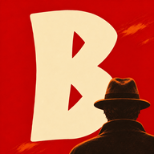

Filmszene: Figuren und Dialog sind erfunden. Auch die Begegnung auf dem Vorplatz und die Fahrt sind Spielszene; belegte Angaben sind als solche gekennzeichnet.

Bitte das Gerät quer halten
Tippen für Ton
Lade Stadt …
Links ziehen: gehen · rechts ziehen: umsehen · am Rechner W A S D und Maus ziehen, Umschalt für schnelles Gehen